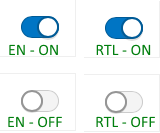

Both Hebrew and Arabic alphabets have 24 characters. Please note that some characters should be written differently depending on their position in the word (beginning, middle, end and stand-alone). Sometimes browsers like IE11 and Edge display Arabic text as disjoined characters, it is a bug.
Learn more about Hebrew alphabet
Learn more about Arabic alphabet
Numbers, English names, and citations within the RTL text are written in LTR direction within the text flow. Stand-alone English text may be right-aligned, in general going in a LTR direction. Punctuation is so-called weak characters, and they are placed at the end of the string on the left. In this example, the tester has wrapped part of a HE expression into the LTR tag to overwrite the browser default behavior that was incorrectly rearranging the string word order:
More detailed information about weak or neutral characters
Keep them LTR. NP if they will be right-aligned.
If, for instance, in the DOJO library, you have a date in dd/mm/yyyy format, the day goes first, followed by the month, with the year at the end. The result string is displayed like this : 2019/12/31. Sometimes browser may reorder it incorrectly, sticking the year to the day, something like this: 312019/12/. It is a bug.
“Indic” are used in some, but not all Arabic-speaking countries, so currently they are not required in Esri software. Some browsers are displaying a mixture of 'Western' and 'Indic' numbers, it is better to avoid such behavior.
“?” should be flipped in AR-only.
“%” goes left side from the number in Arabic and Turkish (%100), not in Hebrew (100%)
Sometimes English text with punctuation may look not very good in RTL layouts. There is no way to control the direction of user-defined text that may be typed in any language. For UI text coded by our developers, it is better to control the punctuation in Always English text like product names. If the developer is not sure how to do it, use LTR tags to prevent browsers from moving punctuation to inappropriate positions.
The following is an example of an issue with ArcGIS Notebook Python 3 Advanced (3.0) with parenthesis wrapped incorrectly in RTL layout.
Solutions:
The XY coordinates are written as in English (X, Y), but from left to right (Y ,X).
The minus sign follows the settings of the operating system.
The latitude and longitude coordinates are written as longitude, latitude (opposite to English), but because of the general RTL text direction, longitude appears at the beginning of the string at the right side and latitude appears at the end of the string at the left side.
The X and Y coordinates are written in pairs (X, Y) in a mathematical format to represent the x- axis and y-axis. While cartographers write spherical coordinates in reverse order, latitude (Y) is first and then longitude (X). Coincidently, this is the correct reading direction for Arabic users, (Y, X) if you intend to use Y,X to represent that the same location in mathematical format.
Note: Not all countries use N/S/E/W notation similar to English. Abbreviations in native characters are widely used in Russia, Thailand, Japan, and many other countries with non-Latin alphabets. Often those abbreviations of hemispheres are followed by abbreviations for latitude and longitude, so more than one character is required for each coordinate notation. Countries where Arabic is used refer to the cardinal directions as Ash Shamaliyah (N), Al Gharbiyah (W), Ash Sharqiyah (E), and Al Janobiyah (S). Additionally, Al Wusta is used for the center. For instance, N is written in AR as ثوانی
Ordered lists and unordered lists should be right-aligned, with bullets or patches at the right side. The same is true for icons. For a numbered list icon, don't flip it; a special icon exists in Calcite UI Icons.
Ordered lists are not just mirrored. Numbers and letters in bullets should stay the same.
The order of most UI elements should go in RTL direction in AR and HE UI. Dialog boxes should be flipped.
While tools within their panels are following their LTR or RTL order, there is an exclusion. Widgets within the Map Frame are always positioned the same, no matter RTL or LTR.
Undo/Redo icons don't flip, but they switch their functionality.
Numbered lists are not just mirrored, numbers should stay recognizable:
Don't mirror icons like checkmarks:

* Note: There may be situations when a graph should go in RTL direction with the Y axes at the right side even in English. For instance, a graph may contain some historical or chronological data. Add an option for users to flip graphs if needed. Usually graphs and charts going in the "wrong" direction are considered low severity issues, but it is recommended that you keep them LTR for consistency reasons.
Circular progress indicators derive their directionality from analog clocks and always turn in the clockwise direction.
Everything imitating physical devices, like MP3 and MP4 players, goes LTR. Note that text under the animation timescale in the following example is correctly written in RTL direction for Arabic (right), compared to English (left):
It is not recommended to flip the map frame and widget positions inside the map (Home, Zoom in, Zoom out, North Arrow, Scalebar, and so on). The app author must rearrange the widget positions if needed for the design purposes. See the following example:
The verbal scale text should go in RTL direction.
While in LTR languages, legend patches go to the left; in AR and HE they are usually right-aligned. In ArcGIS Pro, Desktop, and some web apps, there is an option for a cartographer to choose between positioning legend patches at the left or at the right for all languages if it is needed for cartographical purposes.
Examples are vertical separators between windows and right-align and left-align buttons.
Test manually that if a tool has an arrow it moves the element the same direction shown in the icon.